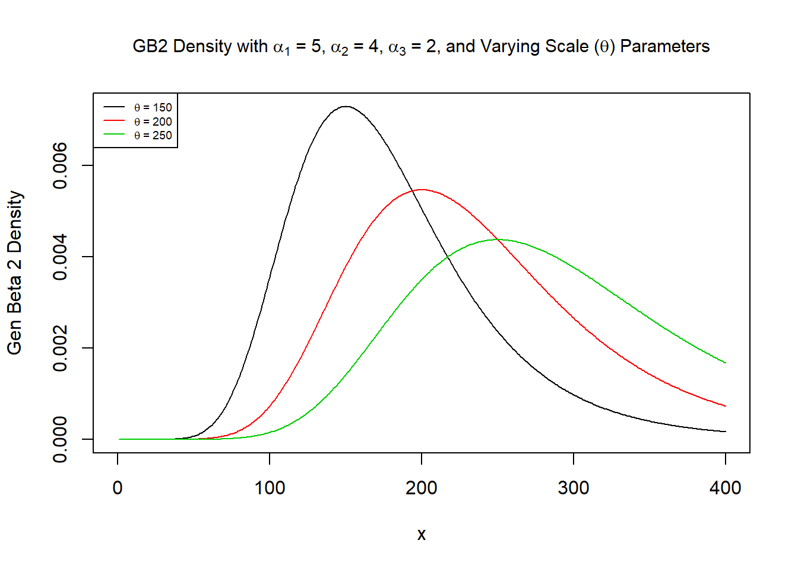
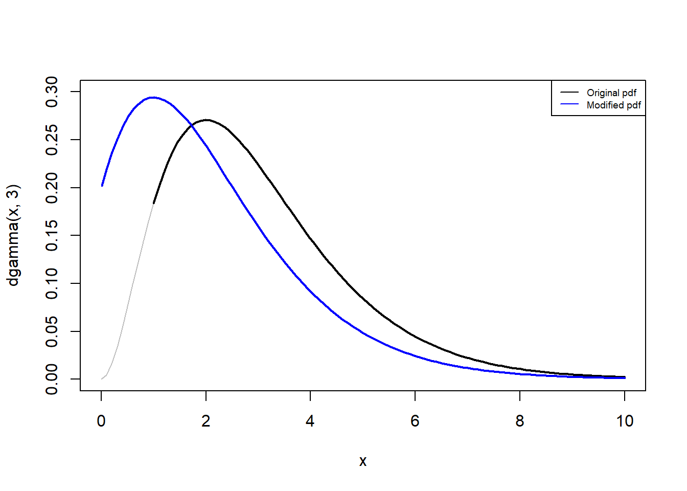
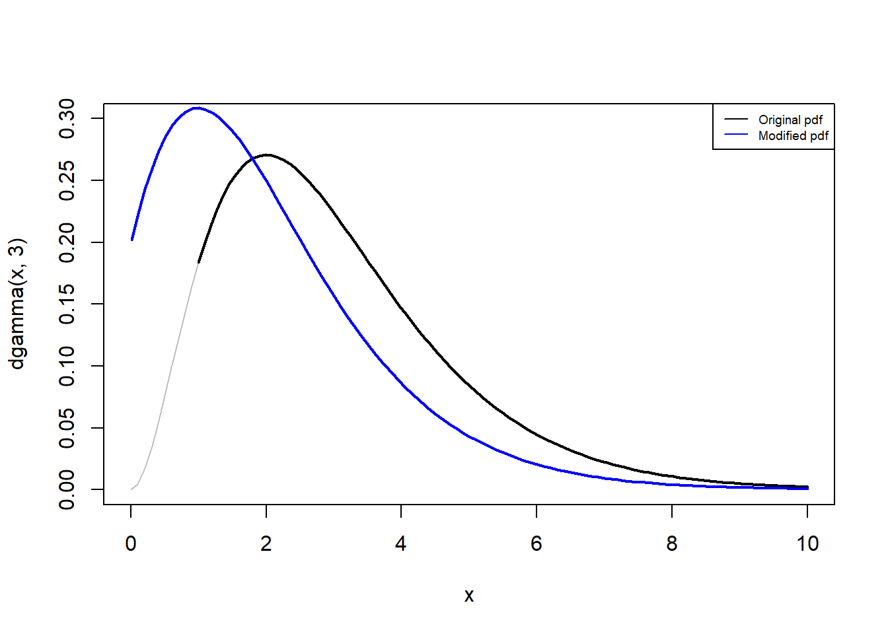

Chapter 4 Modeling Loss Severities
This file contains illustrative R code for computing important count distributions. When reviewing this code, you should open an R session, copy-and-paste the code, and see it perform. Then, you will be able to change parameters, look up commands, and so forth, as you go.
4.1 Required packages
library(actuar)
library(VGAM)4.2 Gamma Distribution
This section demonstrates the effect of the shape and scale parameters on the gamma density.
4.2.1 Varying The Shape Parameter
The graph shows the gamma density functions with varying shape parameters \((\alpha)\)
# Example 1: gamma distribution
# define a grid
x <- seq(0,1000,by=1)
# define a set of scale and shape parameters
scaleparam <- seq(100,250,by=50)
shapeparam <- 2:5
# varying the shape parameter
plot(x, dgamma(x, shape = shapeparam[1], scale = 100), type = "l", ylab = "Gamma density")
for(k in 2:length(shapeparam)){
lines(x,dgamma(x,shape = shapeparam[k], scale = 100), col = k)
}
legend("topright", c(expression(alpha~'=2'), expression(alpha~'=3'), expression(alpha~'=4'), expression(alpha~'=5')), lty=1, col = 1:4)
title(substitute(paste("Pdf Gamma Density with"," ",theta,"=100"," ", "and Varying Shape")))A few quick notes on these commands :
4.2.2 Varying The Scale Parameter
The graph shows the gamma density functions with varying scale parameters \((\theta)\)
plot(x, dgamma(x, shape = 2, scale = scaleparam[1]), type = "l", ylab = "Gamma density")
for(k in 2:length(scaleparam)){
lines(x,dgamma(x,shape = 2, scale = scaleparam[k]), col = k)
}
legend("topright", c(expression(theta~'=100'), expression(theta~'=150'), expression(theta~'=200'), expression(theta~'=250')), lty=1, col = 1:4)
title(substitute(paste("Pdf Gamma Density with"," ",alpha,"=2"," ", "and Varying Scale")))knitr::include_app("https://luyang.shinyapps.io/gamma/",
height = "600px")4.3 Pareto Distribution
This section demonstrates the effect of the shape and scale parameters on the Pareto density function.
4.3.1 Varying The Shape Parameter
The graph shows the Pareto density functions with varying shape parameters \((\alpha)\)
z<- seq(0,3000,by=1)
scaleparam <- seq(2000,3500,500)
shapeparam <- 1:4
# varying the shape parameter
plot(z, dparetoII(z, loc=0, shape = shapeparam[1], scale = 2000), ylim=c(0,0.002),type = "l", ylab = "Pareto density")
for(k in 2:length(shapeparam)){
lines(z,dparetoII(z,loc=0, shape = shapeparam[k], scale = 2000), col = k)
}
legend("topright", c(expression(alpha~'=1'), expression(alpha~'=2'), expression(alpha~'=3'), expression(alpha~'=4')), lty=1, col = 1:4)
title(substitute(paste("Pdf Pareto Density with"," ",theta,"=2000"," ", "and Varying Shape")))
4.3.2 Varying The Scale Parameter
The graph shows the Pareto density functions with varying scale parameters \((\theta)\)
plot(z, dparetoII(z, loc=0, shape = 3, scale = scaleparam[1]), type = "l", ylab = "Pareto density")
for(k in 2:length(scaleparam)){
lines(z,dparetoII(z,loc=0, shape = 3, scale = scaleparam[k]), col = k)
}
legend("topright", c(expression(theta~'=2000'), expression(theta~'=2500'), expression(theta~'=3000'), expression(theta~'=3500')), lty=1, col = 1:4)
title(substitute(paste("Pdf Pareto Density with"," ",alpha,"=3"," ", "and Varying Scale")))4.4 Weibull Distribution
This section demonstrates the effect of the shape and scale parameters on the Weibull density function.
4.4.1 Varying The Shape Parameter
The graph shows the Weibull density function with varying shape parameters \((\alpha)\)
z<- seq(0,400,by=1)
scaleparam <- seq(50,200,50)
shapeparam <- seq(1.5,3,0.5)
# varying the shape parameter
plot(z, dweibull(z, shape = shapeparam[1], scale = 100), ylim=c(0,0.012), type = "l", ylab = "Weibull density")
for(k in 2:length(shapeparam)){
lines(z,dweibull(z,shape = shapeparam[k], scale = 100), col = k)
}
legend("topright", c(expression(alpha~'=1.5'), expression(alpha~'=2'), expression(alpha~'=2.5'), expression(alpha~'=3')), lty=1, col = 1:4)
title(substitute(paste("Pdf Weibull Density with"," ",theta,"=100"," ", "and Varying Shape")))4.4.2 Varying The Scale Parameter
The graph shows the Weibull density function with varying scale parameters \((\theta)\)
plot(z, dweibull(z, shape = 3, scale = scaleparam[1]), type = "l", ylab = "Weibull density")
for(k in 2:length(scaleparam)){
lines(z,dweibull(z,shape = 3, scale = scaleparam[k]), col = k)
}
legend("topright", c(expression(theta~'=50'), expression(theta~'=100'), expression(theta~'=150'), expression(theta~'=200')), lty=1, col = 1:4)
title(substitute(paste("Pdf Weibull Density with"," ",alpha,"=3"," ", "and Varying Scale")))4.5 Generalized Beta Distribution of The Second Kind (GB2)
This section demonstrates the effect of the shape and scale parameters on the GB2 density function.
4.5.1 Varying The Scale Parameter
The graph shows the GB2 density function with varying scale parameter \((\theta)\)
## Example 4:GB2
gb2density <- function(x,shape1,shape2,shape3,scale){
mu <- log(scale)
sigma <- 1/shape3
xt <- (log(x)-mu)/sigma
logexpxt<-ifelse(xt>23,yt,log(1+exp(xt)))
logdens <- shape1*xt - log(sigma) - log(beta(shape1,shape2)) - (shape1+shape2)*logexpxt -log(x)
exp(logdens)
}
x<- seq(0,400,by=1)
alpha1<-5
alpha2<-4
gamma <-2
theta <- seq(150,250,50)
# varying the scale parameter
plot(x, gb2density(x, shape1=alpha1,shape2=alpha2,shape3=gamma, scale = theta[1]),
type = "l", ylab = "Gen Beta 2 density",
main =
expression(paste("GB2 Density with ", alpha[1], "=5,", alpha[2], "=4,", alpha[3],
"=2, and Varying Scale (",theta, ") Parameters")) )
for(k in 2:length(theta)){
lines(x,gb2density(x,shape1=alpha1,shape2=alpha2,shape3=gamma, scale = theta[k]), col = k)
}
legend("topleft", c(expression(theta~'=150'), expression(theta~'=200'), expression(theta~'=250')), lty=1, cex=0.6,col = 1:3)
Note: Here we wrote our own function for the density function of the GB2 density function.
4.6 Methods of Creating New Distributions
This section shows some of the methods of creating new distributions.
4.6.1 Mixture Distributions
The graph below creates a density function from two random variables that follow a gamma distribution.
## Example 5: A mixed density
## specify density of a mixture of 2 gamma distributions
MixtureGammaDensity <- function(x, a1, a2, alphaGamma1, thetaGamma1, alphaGamma2, thetaGamma2){
a1 * dgamma(x, shape = alphaGamma1, scale = thetaGamma1) + a2 * dgamma(x, shape = alphaGamma2, scale = thetaGamma2)
}
w <- 1:30000/100
a1<-0.5
a2<-0.5
alpha1 <- 4
theta1 <- 7
alpha2 <- 15
theta2 <- 7
MixGammadens <- MixtureGammaDensity(w, a1,a2,alpha1, theta1, alpha2, theta2)
plot(w, MixGammadens, type = "l")
4.6.2 Density Obtained Through Splicing
The graph below shows a density function through splicing by combining an exponential distribution on \((0,c)\) with a Pareto distribution on \((c,\infty)\)
##Example 6: density obtained through splicing
## combine an Exp on (0,c) with a Pareto on (c,\infty)
SpliceExpPar <- function(x, c, v, theta, gamma, alpha){
if(0<=x & x<c){return(v * dexp(x, 1/theta)/pexp(c,1/theta))}else
if(x>=c){return((1-v)*dparetoII(x,loc=0, shape = alpha, scale = theta)/(1-pparetoII(x,loc=0, shape = alpha, scale = theta)))}
}
x <- t(as.matrix(1:2500/10))
spliceValues <- apply(x,2,SpliceExpPar, c = 100, v = 0.6, theta = 100, gamma = 200, alpha = 4)
plot(x,spliceValues, type = 'l')
4.7 Coverage Modifications
4.7.1 Load Required Package
The actuar package provides functions for dealing with coverage modifications. In the following sections we will check the functionalities of the coverage command.
library(actuar)4.7.2 Ordinary Deductible
This section plots the modified probability density functions due to deductibles for the payment per loss and payment per payment random variables.
4.7.2.1 Payment Per Loss with Ordinary Deductible
Let \(X\) be the random variable for loss size. The random variable for the payment per loss with deductible \(d\) is \(Y^L=(X-d)_+\). The plot of the modified probability density function is below.
f <- coverage(dgamma, pgamma, deductible = 1, per.loss = TRUE)# create the object
mode(f) # it's a function. Here deductible is 1[1] "function"### Check the pdf for Y^L at 0 and the original loss at 1
f(0, 3) # mass at 0[1] 0.0803014pgamma(0+1, 3) # idem[1] 0.0803014curve(dgamma(x, 3), from = 0, to = 10, ylim = c(0, 0.3), lwd=1, col="gray") # original
curve(dgamma(x, 3), from = 1, to = 10, ylim = c(0, 0.3), lwd=2, add=TRUE)
curve(f(x, 3), from = 0.01, col = "blue", add = TRUE, lwd=2) # modified
points(0, f(0, 3), pch = 16, col = "blue")
legend("topright", c("Original pdf", "Modified pdf"), lty=1, cex=0.6,col = c("black","blue"))A few quick notes on these commands:
- The
coverage()function computes probability density function or cumulative distribution function of the payment per payment or payment per loss random variable under any combination of the following coverage modifications: deductible, limit, coinsurance, inflation. In this illustration we used it to compute the probability density function of the payment per loss random variable with a deductible of 1. - The
f(0, 3)function calculates the pdf when the payment per loss variable is 0 with gamma parameters shape=3 and rate=1. Because we used a deductible of 1 , this should be equal topgamma(0+1, 3).
4.7.2.2 Payment Per Payment with Ordinary Deductible
\(Y^P\) with pdf \(f_{Y^P}(y) = f_X(y+d)/S_X(d)\)
f <- coverage(dgamma, pgamma, deductible = 1) # create the object
f(0, 3) # calculate in x = 0, shape=3, rate=1[1] 0f(5, 3) # calculate in x = 5, shape=3, rate=1[1] 0.04851322dgamma(5 + 1, 3)/pgamma(1, 3, lower = FALSE) # DIY[1] 0.04851322curve(dgamma(x, 3), from = 0, to = 10, ylim = c(0, 0.3), lwd=1,col="gray") # original pdf
curve(dgamma(x, 3), from = 1, to = 10, ylim = c(0, 0.3), add=TRUE, lwd=2)
curve(f(x, 3), from = 0.01, col = "blue", add = TRUE,lwd=2) # modified pdf
legend("topright", c("Original pdf", "Modified pdf"), lty=1, cex=0.6,col = c("black","blue"))
4.7.2.3 Per Payment Variable with Policy Limit, Coinsurance and Inflation
f <- coverage(dgamma, pgamma, deductible = 1, limit = 100, coinsurance = 0.9, inflation = 0.05) # create the object
f(0, 3) # calculate in x = 0, shape=3, rate=1[1] 0f(5, 3) # calculate in x = 5, shape=3, rate=1[1] 0.0431765curve(dgamma(x, 3), from = 0, to = 10, ylim = c(0, 0.3), lwd=1,col="gray")# original pdf
curve(dgamma(x, 3), from = 1, to = 10, ylim = c(0, 0.3), add=TRUE, lwd=2)
curve(f(x, 3), from = 0.01, col = "blue", add = TRUE,lwd=2) # modified pdf
legend("topright", c("Original pdf", "Modified pdf"), lty=1, cex=0.6,col = c("black","blue"))
4.7.3 Franchise Deductible
A policy with a franchise deductible of \(d\) pays nothing if the loss is no greater than \(d\), and pays the full amount of the loss if it is greater than \(d\). This section plots the pdf for the per payment and per loss random variable.
4.7.3.1 Payment Per Loss with Franchise Deductible
# franchise deductible
# per loss variable
f <- coverage(dgamma, pgamma, deductible = 1,
per.loss = TRUE, franchise = TRUE)
f(0, 3) # mass at 0[1] 0.0803014pgamma(1, 3) # idem[1] 0.0803014f(0.5, 3) # 0 < x < 1[1] 0f(1, 3) # x = 1[1] 0f(5, 3) # x > 1[1] 0.08422434dgamma(5,3)[1] 0.08422434curve(dgamma(x, 3), from = 0, to = 10, ylim = c(0, 0.3)) # original
curve(f(x, 3), from = 1.1, col = "blue", add = TRUE) # modified
points(0, f(0, 3), pch = 16, col = "blue") # mass at 0
curve(f(x, 3), from = 0.1, to = 1, col = "blue", add = TRUE) # 0 < x < 1
legend("topright", c("Original pdf", "Modified pdf"), lty=1, cex=0.6,col = c("black","blue"))
Note : to use the franchise deductible , we have to add the option franchise = TRUE in the coverage function.
4.7.3.2 Payment Per Payment with Franchise Deductible
# franchise deductible
# per payment variable
f <- coverage(dgamma, pgamma, deductible = 1, franchise = TRUE)
f(0, 3) # x = 0[1] 0f(0.5, 3) # 0 < x < 1[1] 0f(1, 3) # x = 1[1] 0f(5, 3) # x > 1[1] 0.09157819dgamma(5, 3)/pgamma(1, 3, lower = FALSE) # idem[1] 0.09157819curve(dgamma(x, 3), from = 0, to = 10, ylim = c(0, 0.3)) # original
curve(f(x, 3), from = 1.1, col = "blue", add = TRUE) # modified
curve(f(x, 3), from = 0, to = 1, col = "blue", add = TRUE) # 0 < x < 1
legend("topright", c("Original pdf", "Modified pdf"), lty=1, cex=0.6,col = c("black","blue"))